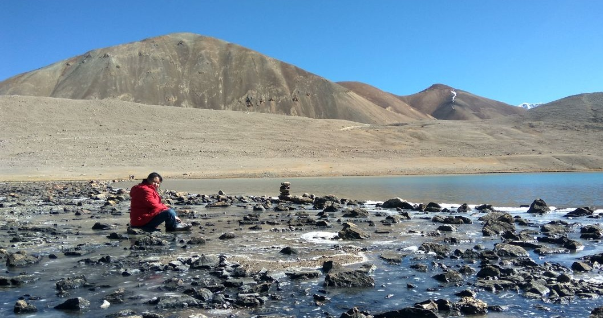

- 

About SILIKA
The journey of SILIKA started with installation of GC-MS-MS and ASE 350 in 2012. Subsequently , MAT 253 was installed along with Gas Bench II, KIEL carbonate IV, GC-TC coupled with Isolink and Elemental Analyser 2000.
SILIKA offers analysis for stable isotopes of H, C, O, N and S in a wide variety of samples.
Most samples can be efficiently: analyzed in continuous flow mode in MAT 253. Dual inlet mode is used for very
high precision work and for measurin
g isotopic ratios in sample processed off-line. For oragnic samples,
before measuring the isotopic ratios, SILIKA has facility of characterising organic componds by GC-MS-MS,GC-FID
and Pyrolyser.

Mailing Address:
G-04, Research Complex(RC) IISER kolkata, Mohanpur Nadia, westbengal 741246 INDIA